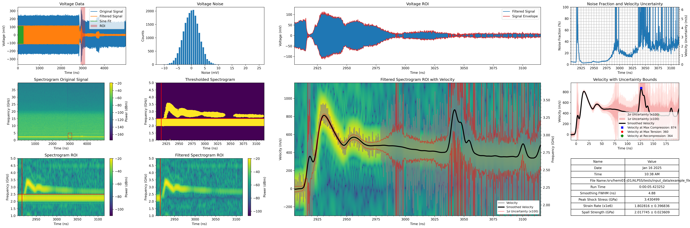

from alpss_main import alpss_main
# matplotlib.use('agg')
alpss_main(
filepath="/srv/hemi01-j01/ALPSS/tests/input_data/example_file.csv",
save_data="yes",
start_time_user="otsu",
header_lines=0,
time_to_skip=0e-6,
time_to_take=10e-6,
t_before=10e-9,
t_after=200e-9,
start_time_correction=0e-9,
freq_min=1e9,
freq_max=5e9,
smoothing_window=1001,
smoothing_wid=3,
smoothing_amp=1,
smoothing_sigma=1,
smoothing_mu=0,
pb_neighbors=400,
pb_idx_correction=0,
rc_neighbors=400,
rc_idx_correction=0,
sample_rate=128e9,
nperseg=512,
noverlap=435,
nfft=5120,
window="hann",
blur_kernel=(5, 5),
blur_sigx=0,
blur_sigy=0,
carrier_band_time=250e-9,
cmap="viridis",
uncert_mult=100,
order=6,
wid=15e7,
lam=1550.016e-9,
C0=4540,
density=1730,
delta_rho=9,
delta_C0=23,
delta_lam=8e-18,
theta=0,
delta_theta=5,
out_files_dir="/srv/hemi01-j01/ALPSS/tests/output_data",
display_plots="yes",
spall_calculation="yes",
plot_figsize=(30, 10),
plot_dpi=300,
)

| Name | Value | |
|---|---|---|
| 0 | Date | Jan 16 2025 |
| 1 | Time | 10:38 AM |
| 2 | File Name | example_file.csv |
| 3 | Run Time | 0:00:05.423252 |
| 4 | Velocity at Max Compression | 873.545099 |
| 5 | Time at Max Compression | 3041.92525 |
| 6 | Velocity at Max Tension | 359.744964 |
| 7 | Time at Max Tension | 3073.31276 |
| 8 | Velocity at Recompression | 364.31683 |
| 9 | Time at Recompression | 3076.41276 |
| 10 | Carrier Frequency | 2233199812.41015 |
| 11 | Spall Strength | 2017744509.729549 |
| 12 | Spall Strength Uncertainty | 23609426.814541 |
| 13 | Strain Rate | 1802816.404935 |
| 14 | Strain Rate Uncertainty | 396836.143379 |
| 15 | Peak Shock Stress | 3430498956.449497 |
| 16 | Spect Time Res | 0.9625 |
| 17 | Spect Freq Res | 15624998.687493 |
| 18 | Spect Velocity Res | 12.109499 |
| 19 | Signal Start Time | 2915.412745 |
| 20 | Smoothing Characteristic Time | 4.879875 |
(<Figure size 9000x3000 with 16 Axes>,
{'Name': ['Date',
'Time',
'File Name',
'Run Time',
'Velocity at Max Compression',
'Time at Max Compression',
'Velocity at Max Tension',
'Time at Max Tension',
'Velocity at Recompression',
'Time at Recompression',
'Carrier Frequency',
'Spall Strength',
'Spall Strength Uncertainty',
'Strain Rate',
'Strain Rate Uncertainty',
'Peak Shock Stress',
'Spect Time Res',
'Spect Freq Res',
'Spect Velocity Res',
'Signal Start Time',
'Smoothing Characteristic Time'],
'Value': ['Jan 16 2025',
'10:38 AM',
'example_file.csv',
datetime.timedelta(seconds=5, microseconds=423252),
873.5450985331408,
3.041925250003852e-06,
359.74496364236944,
3.073312760004665e-06,
364.3168301692125,
3.076412760004421e-06,
2233199812.41015,
2017744509.7295487,
23609426.814541273,
1802816.4049345185,
396836.143378536,
3430498956.449497,
9.625000808504594e-10,
15624998.687492654,
12.109498982796307,
2.9154127448960416e-06,
4.879875409911828e-09]})